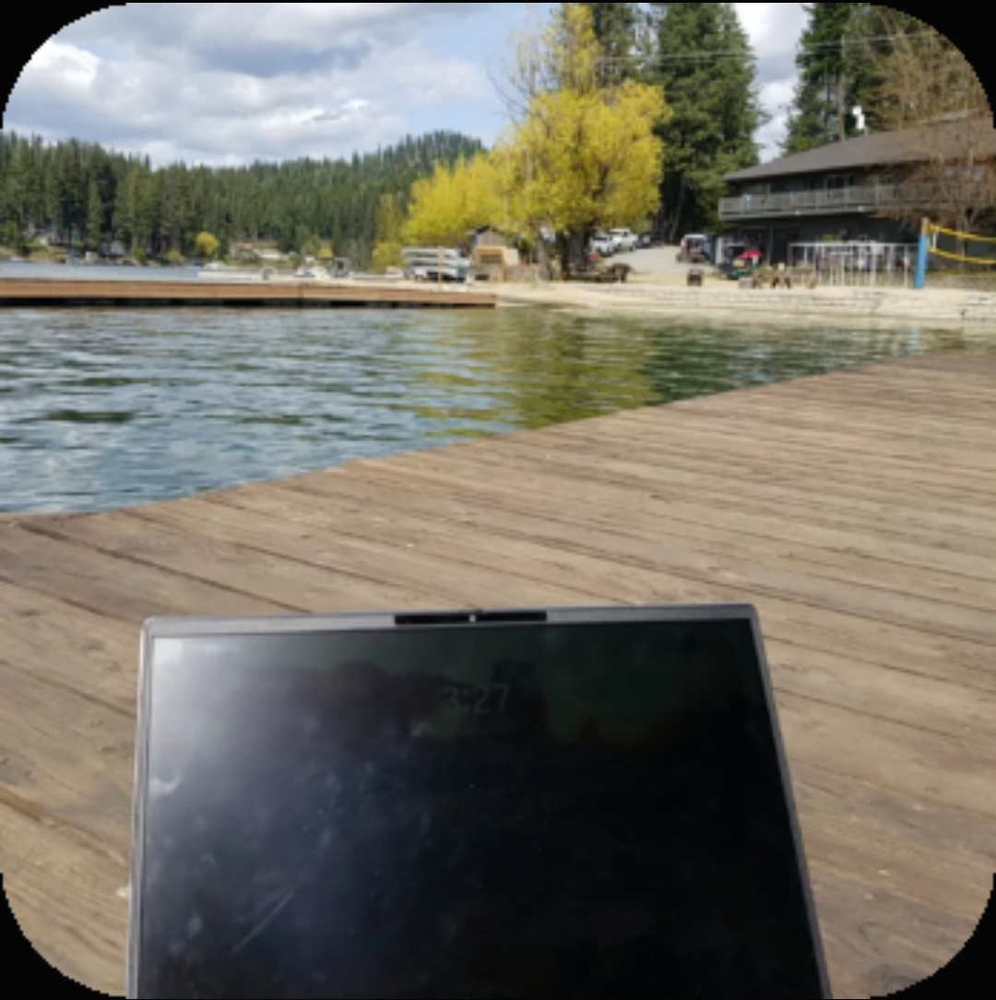
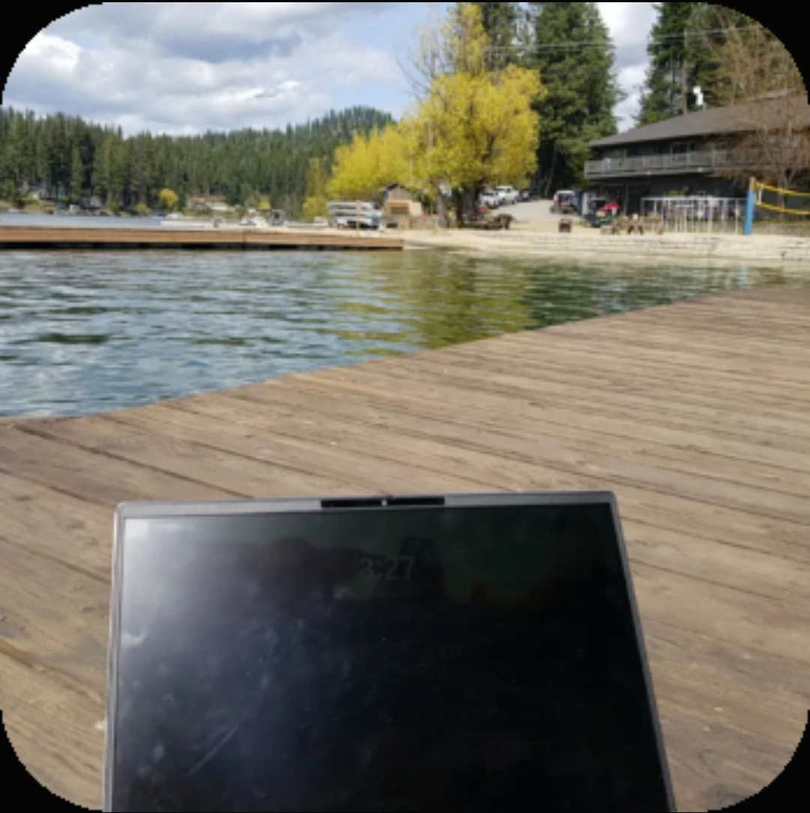

I Could Be a CEO
Wednesday, September 4, 2025 @ 11:13am
I never thought I would have ended up doing what I am today - and I never would have thought that I would like it. But here we are... and I love it more each day.
Especially when my classes start teaching me how to be a CEO :)
The following are some thoughts from my journal a few months ago:
June 10, 2025 - I was studying my doula continuing ed and recertification, and thinking back to 3 years ago when I first began the doula course. And I realized, wow, since then I've learned how to study and I've learned to love, genuinely love, school! I think as a child I had such an overactive mind that school wasn't really a mental challenge as much as it was an irritation; something to be merely tolerated. It just kept my brain quiet when I was a kid. Now, however, I've finally gotten to the point where it's actually expanding my brain and teaching me new thoughts and how to think. School is actually finally challenging my mental powers and capacity. And I actually love it! But the other thing is, I realized something else this past semester when I realized I'm going to graduate with a major, two minors, and a few certifications to boot: yes, I hate materialism which includes letters after my name and diplomas on the wall. But I've also discovered that people treat you differently, or at least listen to you differently, when you have those things. For some people, they would then be driven to succeed by pride (that's the materialism that I hate). But for me, with my overactive- from-childhood mind, I would lay awake in bed at night or ride in the back of the car and plot how to fix the world in virutally every aspect of life. I'm not saying this to be proud at all because goodness knows it's as much a curse as it is a blessing, but by 15 years of age I was already a musician, engineer, psychologist, counselor, architect, author, philosopher, event planner, entrepreneur, business manager, IT technician, doctor, and more, and had mental experience in every one of the C-suite categories. College is just giving me the words to explain everything that's been on my mind for the past 10 years. But the problem is, in this world today you can have inherent knowledge, and it can be just as good as learned knowledge, but nobody takes you seriously because you have nothing to prove that your inherent knowledge actually exists. So - the solution is education. Which is kinda unfortunate because it does waste a lot of your time. But the other thing that's been dawning on me over the past several years, is that school is actually really easy. You don't actually need to force all that unhelpful knowledge into your mind for it to become a part of you; school is literally just about meeting deadlines, learning how to summarize things, and quoting key phrases. So basically if you summarize and quote and just do what you're supposed to - be a responsible human - and end with turning in your assignment on time - especially if the class has extra credit assignments - you don't even need to waste that much time and mental power on the things that are unhelpful to you; you're basically automatically going to be an A student. And then - the cool thing is, it's totally just a cause-and-effect: you do what you're supposed to, you get an A, you earn a diploma, people take you seriously. And along the way, you don't even have to waste very much brainpower, and you can find the words to define both your own brain and the world. A pretty good deal, if you ask me...

 
